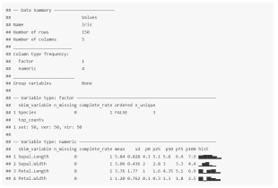
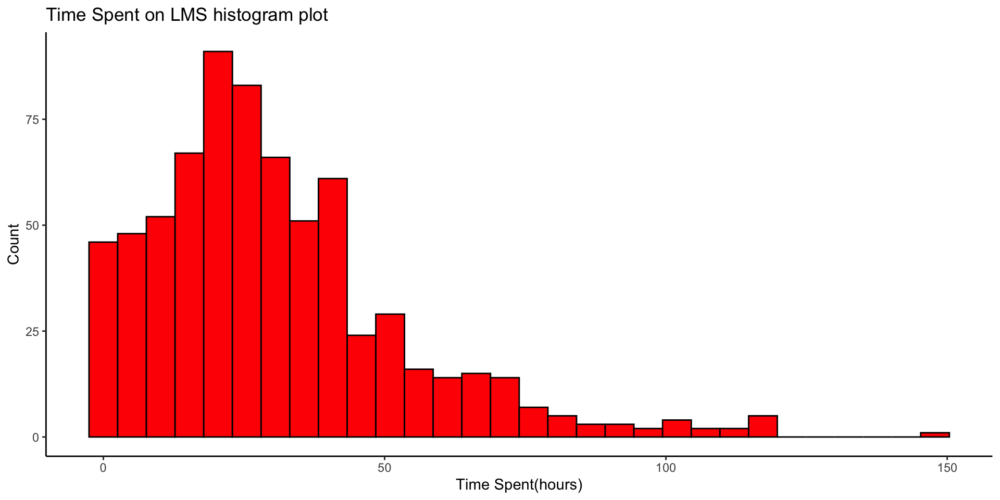

Exploratory Data Analysis
Foundations Module 2: A Code-A-long
SKIMR FuUNCTION


Your turn 👉 Your Turn ⤵
👉 Your Turn ⤵ -> Answer
GGplot2


Do you need all of these things to create a graph?


GGplot2 - Histogram
👉 Your Turn ⤵
In the corresponding code script add the code for a basic histogram for ‘time_spent_hours’.
👉 Your Turn ⤵ -> Answer
# Layer 1: add data and aesthetic mapping
data_to_explore %>%
ggplot(aes(x = time_spent_hours)) +
# layer 2: add histogram geom
# layer 3a: add bin size
#layer 3b: add color
geom_histogram(bins = 30,
fill = "red",
colour = "black") 
]
# Layer 1: add data and aesthetic mapping
data_to_explore %>%
ggplot(aes(x = time_spent_hours)) +
# layer 2: add histogram geom
# layer 3a: add bin size
# layer 3b: add color
geom_histogram(bins = 30, fill = "red", colour = "black")+
#layer 4: add Labels
labs(title="Time Spent on LMS histogram plot",x="Time Spent(hours)", y = "Count")+
theme_classic()
How would we interpret this graph?
SCATTERPLOT


#layer 1: add data and aesthetics mapping
#layer 3: add color scale by type
ggplot(data_to_explore,
aes(x = time_spent_hours,
y = proportion_earned,
color = enrollment_status)) +
#layer 2: + geom function type
geom_point() +
#layer 4: add labels
labs(title="How Time Spent on Course LMS is Related to Points Earned in the Course", #<<
x="Time Spent (Hours)", #<<
y = "Proportion of Points Earned") #<<
#layer 1: add data and aesthetics mapping
#layer 3: add color scale by type
viz1 <- ggplot(data_to_explore, aes(x = time_spent_hours, y = proportion_earned, color = enrollment_status)) +
#layer 2: + geom function type
geom_point() +
#layer 4: add labels
labs(title="How Time Spent on Course LMS is Related to Points Earned in the Course",
x="Time Spent (Hours)",
y = "Proportion of Points Earned")
#layer 5: add facet wrap
facet_wrap(~ subject) #<<
What’s next?
- Complete the
Exploreparts of the Case Study. - Complete the Badge requirement document Foundations badge - Data Sources
- Do required readings for the next Foundations Module 3.